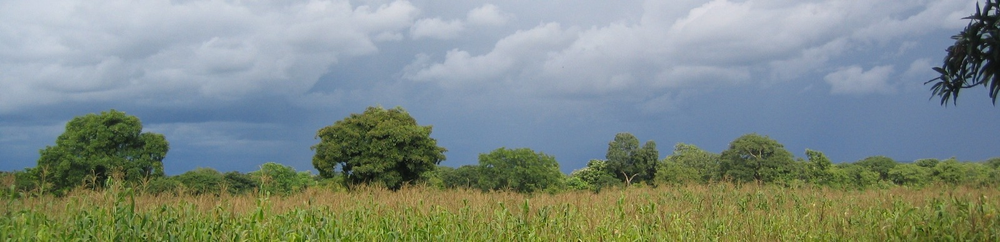
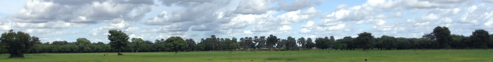
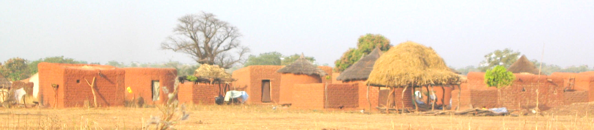
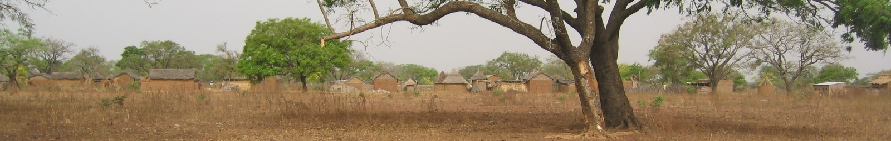
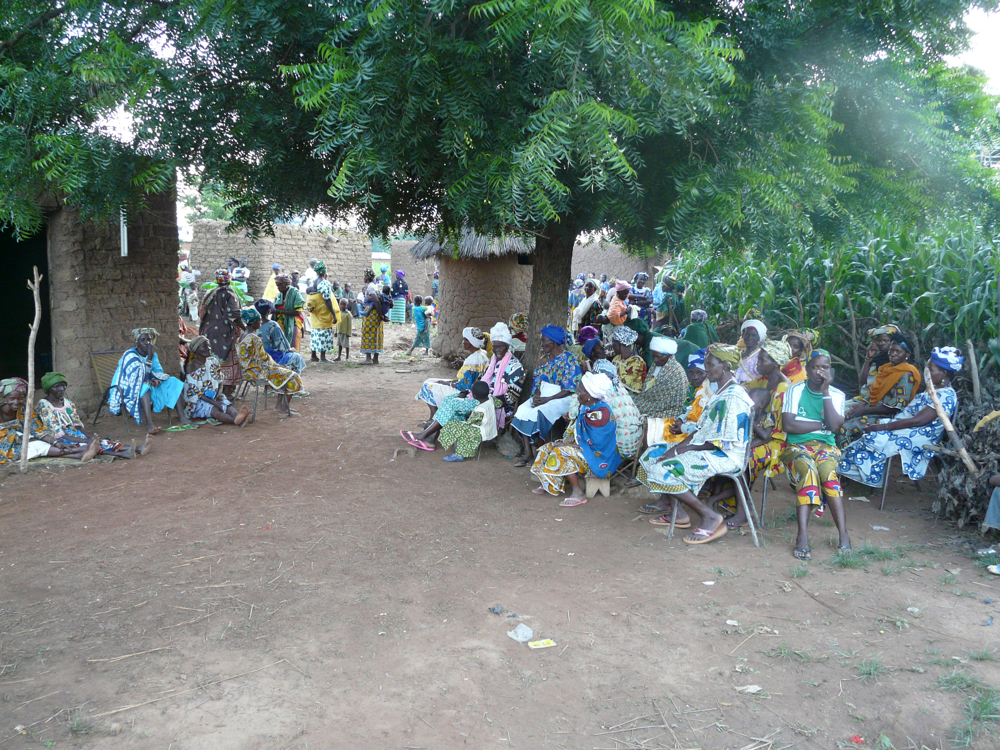
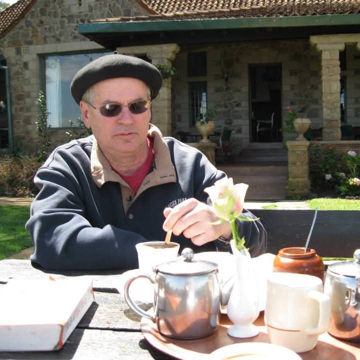
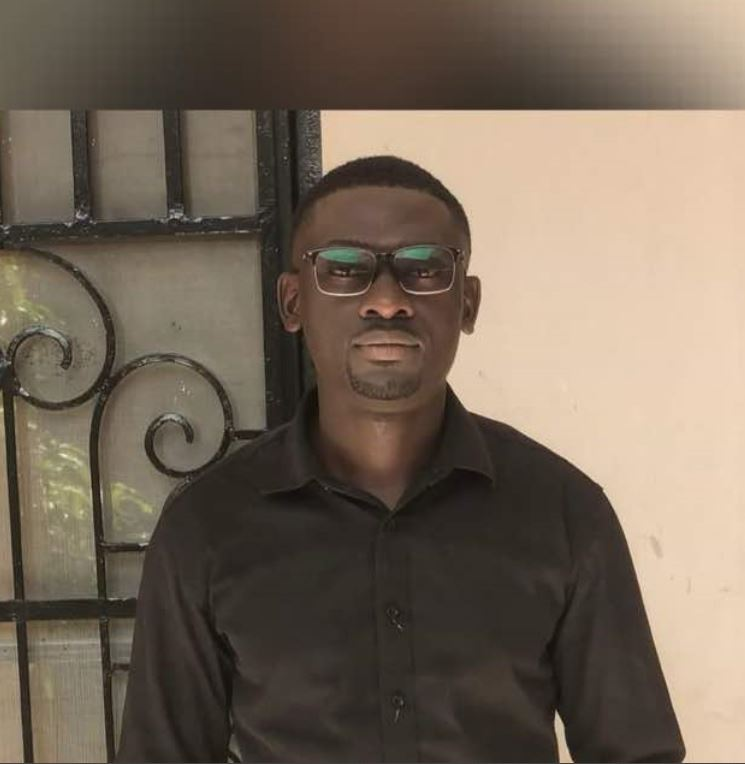
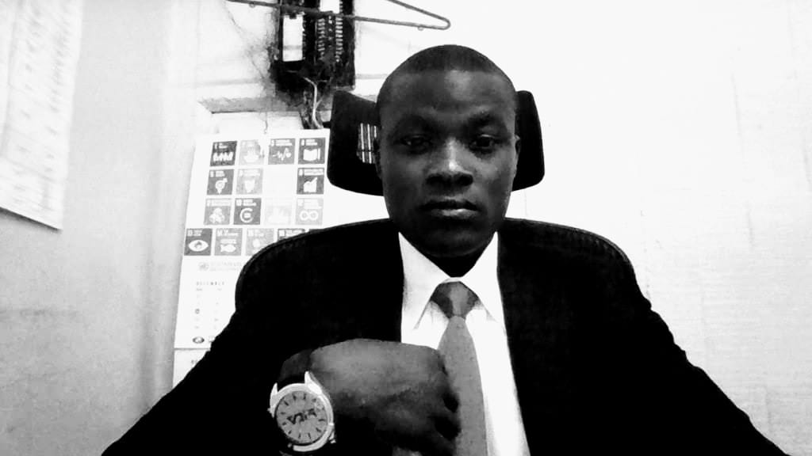
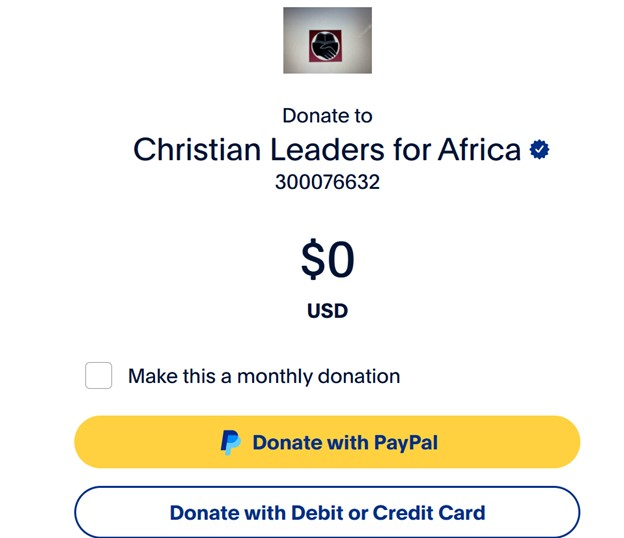

Completion of Supyire Dictionary and Digitized Text Corpus — Africa International University





Welcome to the Supyire Lexicography Project
This project is dedicated to preserving and documenting the Supyire language through lexicography, digital databases, and linguistic research.
About the Project
Supyire is a language spoken by 350,000+ people in southeastern Mali. The New Testament was published in 2008, the Old Testament is currently being translated, and people are being taught to read and write, but as yet there are no dictionaries.
This project aims to publish a Supyire-French and a Supyire-English dictionary, in both print and digital form, for the use of Supyire speakers and for others who want to use it. We also aim to publish a collection of texts in Supyire that will be available to researchers and will also function as a linguistic and cultural archive of the language and culture.
Through this work, this project will promote both the preservation and development of the Supyire language and culture for the education and benefit of Supyire speakers.
History of Research
In 1980, Robert Carlson began studying Supyire under the auspices of Wycliffe Bible Translators and SIL International. He published a reference grammar in 1994, and has written many articles on the language.
As part of this research, Supyire words have been collected and entered in a database which now has over 11,000 entries.
Many texts have also been collected from 1980 to the present. These are currently in a digital database with nearly 400,000 words.
Since 1990, both the lexical and text collection work has been carried out with the help of Ali Sanogo, of Farakala, Mali.
Toolbox Database
The current lexical database is in a computer program called Toolbox, developed by SIL. This database needs to be regularized, corrected, and enhanced with more and better example sentences.
After thorough revision, the database must be transferred to another program, FLEx, also developed by SIL. From FLEx, the Supyire-French and Supyire-English dictionaries can be printed, and apps for smartphones can be created. The phone apps will be made available at no or very low cost.
Example of a lexical entry
Example of a Text
Currently, the text database is in also in Toolbox.
Selected texts will be formatted, annotated, translated and made available online for research. The annotations will be both linguistic and cultural.
Our goal is to make available online a collection of texts number at least 500,000 words.
Example of a proverb
Documentation
Download project files and research documentation.
The Supyire Lexicography Project invites individuals and organizations to join in supporting the preservation of the Supyire language.
You can help by:
🙏 Praying regularly for the success of the project and its team members.
💰 Donating to assist with training, research, and technology expenses.
Every contribution — big or small — helps us move closer to publishing a complete and accessible Supyire dictionary and digital text archive. To get involved, visit the Support page or contact us at:supyire.lexicography@gmail.com
Our Team
We have assembled a small team to work on this project. Prof. Robert Carlson and Ali Sanogo will continue their long-term research, joined by two younger men currently in training to ensure the future of Supyire language preservation.

Prof. Robert Carlson
Project Leader
Ali Sanogo and Robert Carlson have collaborated on dictionary and text databases for over 30 years. Robert also serves as a faculty member in the Languages, Linguistics, and Translation Department at Africa International University (AIU).

Robert Sanogo
Supyire Specialist
A native Supyire speaker, Robert specializes in lexicography and text analysis. He is pursuing graduate studies in Linguistics at AIU, with full commitment to this project through its completion in 2032.

Michael Otieno
IT Specialist
Michael manages data entry and database systems for the project. He is currently pursuing Computer Science at Africa Nazarene University and plans further training in linguistics and language documentation at Dallas International University.
Budget summary
The project budget covers training, equipment, personnel, and travel costs distributed over six years. The tables below summarize all expenditures and totals.
Category
Year 1
Year 2
Year 3
Year 4
Year 5
Year 6
Total
Training
10,581
3,547
3,293
2,994
13,712
13,752
0
Equipment
1,440
0
960
480
960
0
0
Salary & Expenses
15,066
13,866
16,095
15,390
17,871
16,882
0
Travel
2,496
1,200
2,760
1,400
2,860
1,500
0
Total Expenses
0
Admin (10%)
0
Grand Total
0
Support the Project
You can support the project through prayer or donations.
Prayer Request
Unity and Collaboration – for harmony, mutual respect, and effective teamwork among all who are involved in the project.
Provision of Resources – for financial, technical, and human resources needed to complete the work successfully.
ways to donate to Supyire Lexicography Project
There are two charities in the US which receive and transmit funds for the project to AIU in Kenya. These charities provide tax deductible receipts for donations.
The prefered method is through the charity International Generosity, which is affiliated with Trust Bridge Global. A second method, if you prefer to use PayPal, is through the charity Christian Leaders for Africa, which is affiliated with AIU.
NOTE :Donors who are not in the USA can got to internationalgenerosity.com, select Africa International University, fill in Linguistic Project and follow the rest of the instructions. Each country has different charity donation laws.
Enter your amount and select PayPal or card payment.

IMPORTANT : In “Add special instructions to the seller”, write AIU–Linguistic Project.
If you wish to donate through CLA with a physical check, please make the check payable to Christian Leaders for Africa and note that it is for AIU–Linguistic Project.
Mailing Address:
Christian Leaders for Africa
PO Box 3302,
Carmel, IN 46082
3. Bank Transfer to AIU
Bank: Stanbic Bank Account Name: Africa International University Account Number: 0100000200136 SWIFT Code: SBICKENX
In the payment purpose box, specify: Linguistic Project